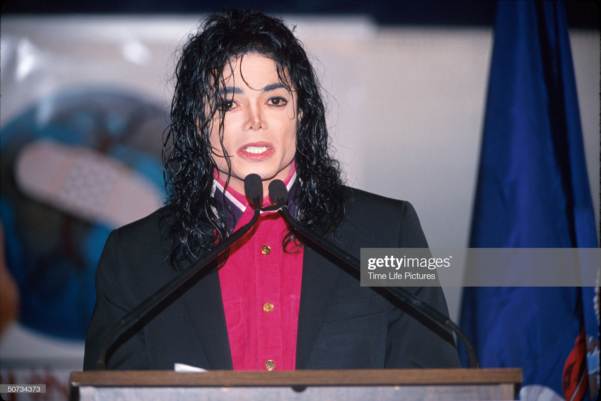
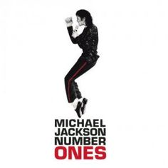
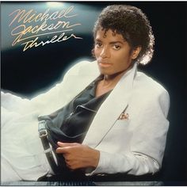
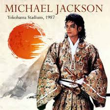
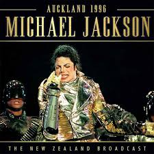
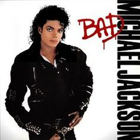
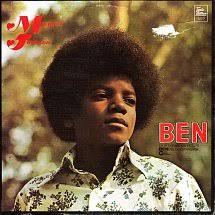
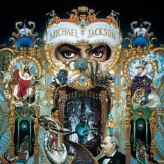
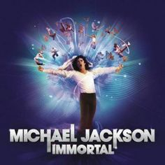
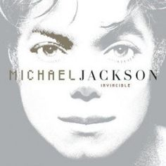

Micheal Jackson
The king of pop lives on

Micheal Jackson the king of pop
Things you don't know about him
- Michael Joseph Jackson was born on August 29, 1958, in Gary, Indiana. His father, Joseph Jackson, was a boxer, steelworker, and a guitarist but to provide for his family, he worked as a crane operator. His mother, Katherine Esther Scruse, was a devout Jehovah’s Witness, but also worked part-time at a departmental store. He had a big family with 3 sisters and 5 brothers.
- MJ’s father was violent with him and his brothers. He faced physical and emotional abuse during unceasing rehearsals. During an interview, he had revealed that his father used to beat him and his brothers with a strap and didn’t regret doing so.
- He gave his first public performance at the age of 5 singing Climb Every Mountain.
- In the late 60s and early 70s, the Jackson 5 recorded many songs, such as Big Boy, The Love You Save, I’ll Be There, Got to Be There, I Want You Back, and many more hits.
- His song “Billie Jean” has earned the tag of being the first song by a black artist to be aired on MTV.
- In 1983, his album- Thriller proved to be a worldwide hit by selling around 65 million copies
- In 1983, with around 47 million viewers, Motown was a huge success where Jackson performed “Billie Jean” and showed his famous dance move called “The Moonwalk.”
- The word “shamone” became popular from MJ’s song, “Bad” released in 1987. MJ used “shamone” instead of “come on” in the song. It is also considered as MJ’s tribute to soul singer Mavis Staples, who used the word, “shamone” in a live version of “I’ll Take You There” in 1975.”
- After signing a $5 million deal with Pepsi-Cola, he got severely injured while filming a commercial for them. It caused burns to his face and scalp. When his injuries were getting addressed, he began experimenting with plastic surgery.
- In 1993, MJ was diagnosed with Vitiligo, which is a rare skin disease in which the pigment is lost from areas of the skin, causing whitish patches.
His works

King of pop

Music and me

Number one

Off the wall

Remix suite

Rock with you

The essential

This is it

Thriller
Xcape album

Yokohama

Farewell my summer love

Aukland album

Aukland

Ben

Dangerous

Forever micheal

History, past, and present

Immortal

Invincible